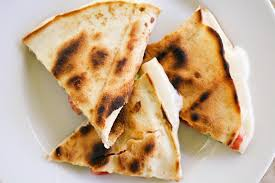
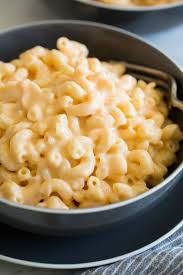

Dinner
Quesadillas

Ingredients
- Butter or Oil
- Large tortillas
- Shredded cheese
- Any other toppings you want inside the quesadilla
Directions
- Bring a pan to medium heat and put the oil or butter on the pan
- Place one tortilla onto the pan
- As the tortilla starts to cook, place the shredded cheese and any other toppings you would like onto the tortilla
- Place another tortilla on top and flip the whole thing over so that both sides cook
- Once fully cooked, take off the pan, cut as desired, and enjoy!
Mac and Cheese

Ingredients
- Macaroni noodles
- Cheddar (or any other kind) of cheese
- 1/4 Cup of milk
- 4 tablespoons of butter
- Pinch of salt
- 8 cups of water
Directions
- Bring water to a boil in a pot and add the pinch of salt
- Once the water is boiled, add macaroni noodles and cook for 5 to 10 minutes
- Once cooked, strain the macaroni noodles
- Put the macaroni back into the pot, add the milk, butter, and cheese, and stir until fully incorporated
- Enjoy!